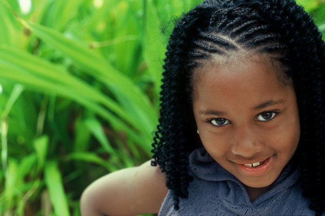

Styling

Afro
The Afro is a large, often spherical growth of afro-textured hair that became popular during the Black power movement. The Afro has a number of variants including “afro puffs” (a cross between an Afro and pigtails) and a variant in which the Afro is treated with a blow dryer to become a flowing mane. The “hi-top fade” was common among African-American men and boys in the 1980s and has since been replaced in popularity by the 360 waves and the Caesar haircut.

Braids
Other styles include plaits or braids, the two-strand twist, and basic twists, all of which can form into manicured dreadlocks if the hair is allowed to knit together in the style-pattern. Basic twists include finger-coils and comb-coil twists. Dreadlocks, also called “dreads”, “locks” or “locs”, can also be formed by allowing the hairs to weave together on their own from an Afro. Another option is the trademarked “Sisterlocks” method, which produces what could be called very neat micro-dreadlocks.